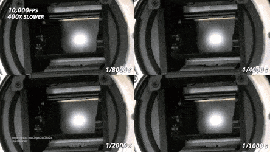
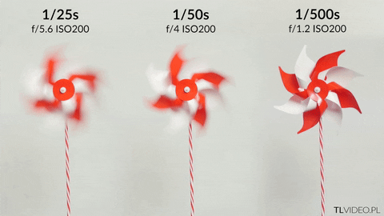

Выдержка
Выдержка, или время экспонирования снимка, или скорость затвора (shutter speed), — это то время, за которое фотоаппарат делает кадр.
В современных фотоаппаратах время выдержки отрабатывает затвор (shutter). До начала съёмки матрица закрыта его непрозрачными шторками (ламелями), и лишь на короткое время открывается, чтобы сделать кадр.
На что влияет выдержка
Количество света, попадающего на матрицу
Чем дольше открыт затвор, тем больше света попадает на матрицу. Соответственно, чем больше выдержка, тем ярче получается картинка.
Передача на фото движущихся объектов
Чем быстрее движется объект в кадре, тем короче нужна выдержка. Соответственно, чем ниже выдержка, тем более резкая получается картинка.
Правило 180°
Для того, чтобы видео смотрелось натурально, скорость затвора должна быть в 2 раза больше чем количество кадров в секунду.
Пример: вы снимаете видео в 30 FPS, тогда выдержка должна быть 1/60.